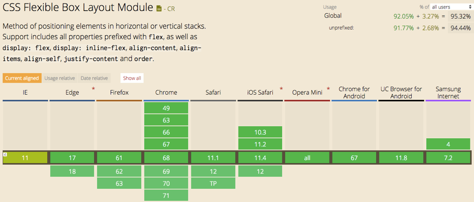

How do I see the differences between HTML and CSS?
- What is the difference between the usage of HTML and CSS?
- What is the newest version of HTML?
- What are the top five most used HTML5 elements?
-
ptag litagdivtagh1 - h6tagatag- Have you checked out the HTML5 cheatsheet?
- What is the difference between semantic and non-semantic elements?
- Why do we prefer using semantic elements?
- Do all browsers support all of the newest HTML / CSS elements?
- Test the following elements on Can I Use: svg, nav, code, form, datalist. Which browser version supports them and which do not?
Html is used for the written content of a website and CSS is use for the graphical aspect, the layout and the content animation
Version 5
the top five most used HTML tags are the following:
Yes I have, here's a link to the cheatsheet
Semantic elements simply mean, elements with meaning. The reason being, there definition in the code tells the browser and the developer what they are supposed to do. Framing in simpler words, these elements describe the type of content they are supposed to contain.
Non-Semantic elements don’t have any meaning. They don’t tell anything about the content they contain. They can be used with different attributes to mark up semantics common to a group.
Because they are more descriptive, self-explainatory and they refer to the type of their content
Not all browsers are supporting the latest HTML/CSS functionalities, they do not have the same compatibility level
Chrome is the browser which has the better compatibility
